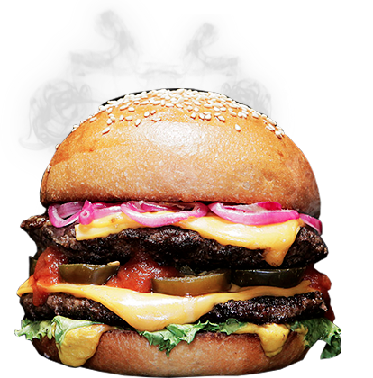

<!DOCTYPE html>
<html lang="ru">

<head>
	<meta charset="UTF-8">
	<title>Яндекс.Карты</title>
	<link href="https://fonts.googleapis.com/css?family=Indie+Flower" rel="stylesheet">
	<link href="https://fonts.googleapis.com/css?family=Pacifico" rel="stylesheet">
	<link href="https://fonts.googleapis.com/css?family=Shadows+Into+Light" rel="stylesheet">
	<style>
		.map {
			height: 100vh;
			width: 100%;
		}

		.map__hint {
			padding: 20px;
			min-height: 55px;
			min-width: 195px;
			font-size: 20px;
			line-height: 1;
			color: #ffffff;
			background-color: #f9b43b;
			background-image: linear-gradient(to top, #f9b43b 0%, #eb8c38 48%, #f9b43b 74%, #f9b43b 100%);
			border-radius: 20px;
		}

		.map__balloon {
			padding: 20px;
			font-size: 30px;
			line-height: 1;
			color: #ffffff;
			background-color: #f9b43b;
			background-image: linear-gradient(to top, #f9b43b 0%, #eb8c38 48%, #f9b43b 74%, #f9b43b 100%);
			border-radius: 20px;
		}

		.map__burger-img {
			float: right;
			height: 100px;
			width: 100px;
		}
	</style>
</head>

<body>
	<div id="map" class="map"></div>

	<script src="https://api-maps.yandex.ru/2.1/?apikey=dfb6b86d-6936-4fee-a22a-0b7a71aef590&lang=ru_RU" type="text/javascript"></script>
	<script>
		// Функция ymaps.ready() будет вызвана, когда
        // загрузятся все компоненты API, а также когда будет готово DOM-дерево.
		ymaps.ready(init);

		var placemarks = [{
					latitude: 59.97,
					longitude: 30.31,
					hintContent: '<div class="map__hint">ул. Литераторов, д. 19</div>',
					balloonContent: [
						'<div class="map__balloon">',
						'',
						'Самые вкусные бургеры у нас! Заходите по адресу: ул. Литераторов, д. 19',
						'</div>'
					]
				},
				{
					latitude: 59.94,
					longitude: 30.25,
					hintContent: '<div class="map__hint">Малый проспект В О, д 64</div>',
					balloonContent: [
						'<div class="map__balloon">',
						'',
						'Самые вкусные бургеры у нас! Заходите по адресу: Малый проспект В О, д 64',
						'</div>'
					]
				},
				{
					latitude: 59.93,
					longitude: 30.34,
					hintContent: '<div class="map__hint">наб. реки Фонтанки, д. 56</div>',
					balloonContent: [
						'<div class="map__balloon">',
						'',
						'Самые вкусные бургеры у нас! Заходите по адресу: наб. реки Фонтанки, д. 56',
						'</div>'
					]
				}
			],
			geoObjects = [];

		function init() {
			var map = new ymaps.Map('map', {
				// Координаты центра карты.
                // Порядок по умолчанию: «широта, долгота».
                // Чтобы не определять координаты центра карты вручную,
                // воспользуйтесь инструментом Определение координат.
                center: [59.94, 30.32],
                // Уровень масштабирования. Допустимые значения:
                // от 0 (весь мир) до 19.
                zoom: 10,
                // Выбираем нужный функционал управления - здесь - только zoom
                controls: ['zoomControl'],
                // Отключаем поведение по умолчанию - скролл колесиком мыши -> zoom, оставляем перетаскивание с зажатой ЛКМ -> перемещение по карте
                behaviors: ['drag']
			});

			for (var i = 0; i < placemarks.length; i++) {
				geoObjects[i] = new ymaps.Placemark([placemarks[i].latitude, placemarks[i].longitude], {
					// Добавляем хинт - всплывающая подсказка при наведении
					hintContent: placemarks[i].hintContent,
					 // Добавляем балун - всплывающая подсказка при клике 
					balloonContent: placemarks[i].balloonContent.join('')
				}, {
					iconLayout: 'default#image',
					iconImageHref: 'img/sprite.png',
					iconImageSize: [46, 57],
					iconImageOffset: [-23, -57],
					iconImageClipRect: [
						[415, 0],
						[461, 57]
					]
				});
			}

			var clusterer = new ymaps.Clusterer({
				clusterIcons: [{
					href: 'img/burger.png',
					size: [100, 100],
					offset: [-50, -50]
				}],
				clusterIconContentLayout: null
			});

			map.geoObjects.add(clusterer);
			clusterer.add(geoObjects);

			// Добавление текущего адреса метки в балун при клике

			// myMap.geoObjects.events
            //     .add('click', function (event) {
            //         // Текущая метка на которой произошло событие
            //         var target = event.get('target');

            //         ymaps.geocode(target.geometry.getCoordinates())
            //             .then(function (res) {
            //                 var firstGeo = res.geoObjects.get(0);
            //                 target.properties.set({
            //                     balloonContent: firstGeo.properties.get('text')
            //                 });
            //             });
            //     });
		}
	</script>
</body>

</html>